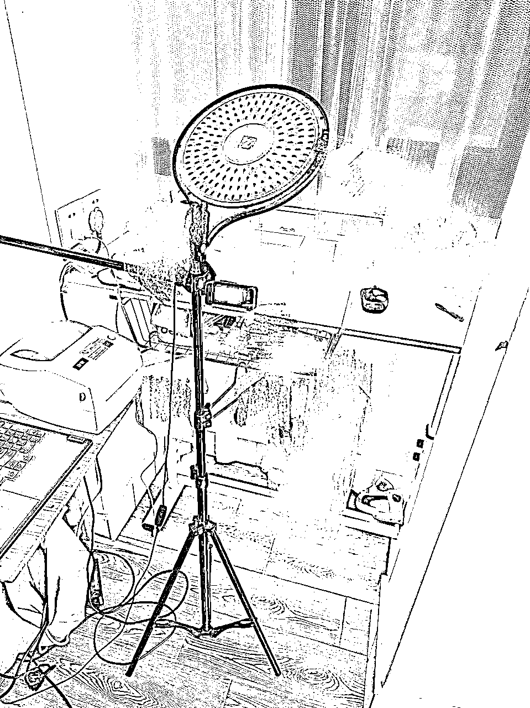

来源：https://lz4u7ofjfz.feishu.cn/docx/ICi0dQYL2oYyXXxv5PHcbbA3nQh
大家好，我是齐亚子。我是从2020年4月第一次加入生财，续费5年至今。这5年里，一直在努力学习，探索自己的赛道。却从未在生财输出。而现在，我觉得我准备好了，想和大家分享一下我在过去几个月里的小红书电商之路。
我觉得这是大家都可以复制的一条路，很适合一人或者小团队去做。
我是在24年4月份才第一次接触小红书电商的， 以前也没有什么电商经验。小红书在以前就是被我当作百度来用，从来没发过什么笔记，账号粉丝个位数。近3个月也达到了GMV100w＋的成果，利润在20%以上。这个收益比起电商多年的朋友真是不值一提，但对于一个像我一样从0开始的小白来说（并且要照顾两岁多的女儿，无法全职投入的情况下），有这个成绩我自己还是比较满意了。没有电商经验，也不是护肤本行专业，也不需要先做IP起号，就直接第一篇笔记就发的带货笔记，简单粗暴，上手快，普适性强，很适合个人或小团队去深耕。
下面是最近三个月的GMV（1.27左右开始的低峰是因为过年，那段时间给自己放了个假，没有运营）。
同时，为了检测可复制性，年前有段时间，我鼓动几个前同事也开始尝试做小红书。
和我一样，他们也从未做过小红书。一开始，他们样品都没有采，只是在网上找图写笔记（他俩都没有任何自媒体的经验，图片去重都是我现教的），同事A在第2天出单，同事B在第5天出单，同事A出单后，又接连出了几单。但她白天炒股，行情好就摆烂，行情不好就写写笔记，笑死，没有持续坚持，最终大概GMV1万。同事B因工作繁忙，后面没有再写，出单较少，但也偶尔会让我帮她代发一单。
结论是，只要坚持去写，就会出单；如果网感好一点，能很快模仿到爆款笔记的精髓，那就离爆单也不远了。
在小红书选择做美妆护肤这个赛道本身很有优势，即使像我这样完全跨行，也可以很快取得结果。
小红书平台本身就有很多美妆护肤博主种草，美妆护肤赛道天然优势。被种草，然后下单，是一个很丝滑的闭环。小红书读者的消费习惯已经逐渐被养成，纵使还是有部分人会跳转到淘宝去找同款。但有句话就是，我们也不是做所有人的生意。会跳转到其它平台去下单的顾客，她要么只相信旗舰店，要么喜欢比价。这两者都不是我的目标顾客。除了喜欢比价格的人，也有更多嫌麻烦、不愿意为了几块十几块到处比价浪费时间的人，在我看来，这才是优质顾客。不墨迹，喜欢就买。这就是我的目标群体。我也认为，在小红书做电商，卷价格不是主流，拼你的种草能力才是王道。淘宝很多老板卷价格卷到5%都不到的利润。我的利润大部分控制在20%以上。
小红书的顾客质量很高。没有评价不刷单也会有人下单。似乎是平台给人天然的信任感。我的很多顾客在淘宝只在旗舰店买，C店拼多多从来不看，但是却愿意在0粉丝0订单的我这种小红书普通商家处下单。并且，一旦买到低价正品， 会后继对我产生很大的信任。对他们来说，重新找一家店，虽然便宜个十几块，但是会有试错成本，所以会有一定的黏性在。像我很多的产品，是粉丝们一直催着我去搞货源的，这就是建立在信任的基础上的。并且也少有因为贪小便宜而申请仅退款之类的（拼多多很常见）行为。我的售后率（包含未发货仅退款，退货退款等）在10%左右。这10%当中，未发货的退款占大多数。
就算不是护肤行业出身，没有什么专业知识，也非常友好。很多30~50岁的一二线城市女性，有闲钱，愿意为护肤付费，不需要讲得多专业，只想听这个护肤品能有什么作用。笔记种草就已经非常容易出单，就算不会拍视频不会剪辑视频也完全OK。只要勤勤恳恳写笔记，堆量的同时提升自己的网感。出单一点都不难。正反馈来得会很快，更加容易让人坚持。
不需要付费买流量，我现在到这个成果全是自然流。没有刷过单没有刷过评价。一直在用最朴素的方式在卖货。前期量小也可以不囤货，让人一件代发。成本低，不需要什么启动资金，有一部手机，可以处理图片写文案发笔记，或者再加一台电脑，用来处理订单，就足够了。很适合作为一门副业（且，认真去做的话可能很快就能超过主业）
不同于抖音，大量MCN及专业团队，卷付费流量；也不同于淘宝和拼多多，电商老板卷价格。相对来说，小红书是一片正在被挖掘的净土。谁能想我这么一个完全跨行，毫无直播经验的普通人也能在短时间内获得这个成果呢。总结起来，我觉得，主要可能还是我选的细分赛道比较有优势。像很多小红书现在做的比较大的护肤电商博主，title是7年淘宝店铺，10年美妆行业人等等，对我而言，我啥经验也没有。我也不建议大家过度包装，立个假人设很难一直不暴露。所以选的细心赛道或者说选品比较重要。我选的是小众贵妇品牌的效期品，本身官旗、专柜等都大几百在卖，因为效期的原因打折出售（后文有具体写）。
一直有着创业心，不想给人打工，却一直被“刚刚好”的工资耽搁。
——我相信，肯定也有很多人像我这样，割舍不下本职工作，再被生活琐事分走精力，再无更多精力副业。总想着能有一天副业超过主业，再辞职。 可能对于大部分人而言是这样子的，但是我到现在才明白，我是属于要破釜沉舟的那一种。
我是在2020年4月第一次加入生财，续费5年至今。也算是一个生财的老人吧。这5年里，也大大小小尝试过一些项目。在视频号刚开始时做过一个万号粉（那时候的万号粉还是很少的），然而选了个动漫赛道，至今没有啥变现渠道——从这段经历中我深刻领悟到做自媒体一定要先想好变现方式再去选赛道，否则全是无用功。后来跟着生财航海做过快团团，快团团也属于正反馈来得很快的副业，但我当时做的本地生鲜团购当时已走下坡路。坚持了大半年最终放弃了。——这段经历算是稍微了解了电商。其它还有小项目的尝试就不一一例举了。
在这些项目的尝试中，我感受到很深的一个还是，时间真的完全不够用。建筑行业同行都知道，干着牛马的活，早九晚十，基本没啥时间搞副业。而且这几年建筑业真的是每况愈下，行业越来越不景气。央企都开始拖欠工工资了。这也让副业成为我的主业的念头愈发在我脑海里生根发芽——虽然我还没有副业。
在2024年三月底，下定决心拿完年终奖就辞职。 现在看来，也是真的算是很好的一个止损点。公司尽全力将年终奖发完，第二年开始拖欠工资。现在我还在职的同事真是苦不堪言。虽然那时候我并没有一个正儿八经可以给我赚钱的副业。 但我有一个极大的信念，我相信我肯定可以赚到钱。
辞职后，激情满满，报名参加了生财当时3个小航海，其中一个就是小红书百货。跟着教程注册了小红书店铺，选品上品混剪百货视频，机缘巧合，有个朋友在美妆护肤代理公司，跟我说她有个小众面霜的货，我心想小红书本身就是美妆护肤种草的天堂，于是灵机一动，把这个面霜发在了小红书——
没想到，我竟然从此踏上了小红书电商之路。
发第一篇笔记时，我连样品都没有（其实是一点成本都不想出）。就在网上找图，去重，研究爆款笔记，写文案，就发出去了（后面我会具体展开讲讲怎么找图，怎么写笔记），结果第二天就出了一单！说真的，当时是真的很意外！！一个10个粉丝都没有的账号，没有任何一条出售记录，没有任何评价，但是也有人下单！！我真的震惊了！同时也很兴奋！正反馈来得如此之快，我对小红书好感剧增！
出单后激情高涨，买了样品回来自己拍照，每天更新1-2篇笔记，然后在一个星期之后，写的第4篇笔记开始小爆，订单量逐步上涨。
小红书其实真的蛮慢热的，我写的笔记基本都不是在第一二天开始起流量，基本都是一周，两周这样的节点。每天都坚持更新笔记，前后接力，所以这样过了一个月，前面写的笔记流量降了，后面写的笔记就开始起流量。这样一个月慢慢出单，也算卖了有9万＋。
小红书的618是从5月20日开始的。当时因为没有搞清楚平台的规则， 店铺的优惠券又增加平台得300-50，当我意识到时，已经低于成本价一半的价格卖出了十几单。因为没有电商售后经验，被这十几单弄得焦头烂额。大部分买家接受了我的解释并愿意补一部分钱给我降低我的损失，也有一两个人本身就是冲着薅羊毛来的，因为这个人连着拍了三单。另外，我设置的店铺优惠券，如果之前已经领了，是无法取消的，那叠加平台券我就是亏。一气之下，我就把商品全部下架了。
小红书受挫之后，恰逢当时生财又开启了一期小航海。我报名参加了视频号长航海，以及又报了一期小红书百货。了解到书豪教练的小红书无人，很心动，在生财浏览了很多关于抖音，快手，小红书的无人直播教程。在当时，小红书无人还是可行的（现在不行了，平台逐渐完善），我花费了很多精力在视频号剪辑，无人直播的研究中，很长一段时间没有更新小红书笔记，订单逐渐减少。视频号也总是因为发布类似内容而被限流，搞得我很心累。
那段时间恰逢生财线下活动如火如荼，我报名参加了好多期，每一次都收获满满，在聚会中也链接到很多同在上海大本营的生财小伙伴。在一次次交流中，我从迷茫到逐渐坚定。
后来真正使我完全坚定下来，是参加了一次线下大会(邱老师送了一张赠票，感谢）。
这次大会中的干货我已经不记得多少了，但是当时有个嘉宾孙圈圈的一句话触动了我。
她说她今年全心力投入到IP操盘手孵化，把她前面的业务全部割舍掉了，纵使还是有很多人来找她，她前面的业务还是能给她带来不小的收益，但她需要花心力去交付。所以纵使还能产生收益，她也毅然决然放弃。
可能你们觉得也没啥关联，但我就是那一瞬间，我下定了决心：不再到处尝试，认真的好好地做小红书。我现在的小红书护肤赛道虽然不是赚快钱的路子，但是是一步一个脚印，逐渐积累我的客户群体，认认真真把号做起来，而不是各种废号玩法，赚一波快钱，换一个品，换一个号。
慢慢来才比较快！——这也是我花了大几个月才深刻领悟到的道理。
再次回归小红书恢复日更已经到了8月份，这次我花了将近一个月的时间，才迎来爆款笔记。
这一个月很煎熬，每天只有几百的GMV，但是我坚持下来了！
这个坡爬得是真好看啊！！
不禁再次感慨，小红书真的是很慢热！一个月前写的笔记，被平台翻出来爆了😂。
所以也是想和大家说，小红书电商玩法其中之一是：不要隐藏笔记，纵使数据不好看！谁能想，一个月前的笔记，爆了，而且是大爆！
也算运气真的好，大爆之前一天也就不到10个订单，想着未雨绸缪先跟快递谈了个价格，当时是按一个月400单谈的，其实心里是打怵的。没想到谈好价格，拿来面单的第二天就出了80多单，第三天直接150单了。。
7天直接把GMV干到了11万＋！
那是非常焦虑的一周：货不够发，包材也缺，还要想办法怎么让流量来得更久更猛一点。
每天订货，订包材，还有自己打包快递，还要继续发笔记，维护评论，处理售前咨询和售后……
忙，累，但是又很充实，很快乐。
这一次爆单比4月份那次来得猛，究其原因是因为我写了一个月的笔记，同一个商品来回写了20多篇，其中一篇爆了，也带动了其它笔记的流量，所以7天直接干到了11万！但来得快去的也快，一周之后，每天GMV跳回到5000＋左右。
小红书在7月份办了一个电商link大会，会上鼓励大家做直播非常明显，也明确表明在直播上流量会有很大的倾斜。纵使知道这一点，我还是一拖再拖，因为0经验，也不擅长一个人说话自嗨，甚至还有镜头恐惧。一直纠结犹豫，但在笔记大爆这个节骨眼上，我觉得我必须要迈出这一步了！
一开始是非常简陋的环境，在阳台架一块桌板，摆上样品，就这样开始了……

（就这么点巴掌大的地方，桌上摆样品，左边放着电脑和面单打印机，下面还晒着我女儿的衣服😂。一边用手机直播，一边在电脑上备注和处理订单。）——大概是大家见过最简陋的直播间之一吧，哈哈。
那个时候的小红书，对直播有多友好呢？
有时候我出去散个步，直播间就这样挂着，也有成交，排名在榜单上蹭蹭往上窜——当然现在不行了，小红书平台现在对直播也是越来越严格了，但比起视频号还是要宽松的多。
小红书的直播和其他的平台直播的调性我觉得完全不一样，来我直播间的人大多给我的评价是，听着很舒服，很温柔，觉得我非常真诚，相信我，就下单了，我总结下来她们的意思是，慢慢地讲述，不是扯着嗓子喊一二三上链接。因为我也的确不会那一套直播，没学过任何直播课程，也不知道该如何逼单……就是在直播间慢慢说自己对品牌的了解，对产品的介绍，以及自己的使用感受。就比方说章小蕙，伊能静，董洁这些小红书直播巨头，她们的直播，也是这种娓娓道来的调性。
靠笔记出单时，每天或者每一段时间的浮动还是比较大，因为笔记爆了直接决定爆单，笔记不给流量时，就比较平淡。作为主业的话，是比较容易让人患得患失的。
但每日稳定2-5小时的直播，使得我目前每日GMV较为稳定（除了1月底二月初因为临近过年停播，数据骤降。）
日常GMV基本在1万左右，这样综合下来，一个月是30多万。有时候提前完成就2,3个小时也下播了，有时候会播到5小时。还有一次想要创个3万的记录，拉时长到了8个多小时，真的是有点累😂。其实如果有人接力直播。数据肯定是可以更好的，只是我现在自己吃不消也没有那么多时间播那么久。
我相信，可能很多圈友都有过我这种感受吧。从0到1，从1到10，都是快乐并享受的，想要做到更大更强却遇到瓶颈，开始焦虑不安。在整个过程中，我第一次出单，很兴奋；第一个GMV10万的一个月，开心到模糊；第一次出现7天11万的爆款，我更是快乐地要炸了！而现在，我更多的是——焦虑。
月GMV趋向于稳定，我深知自己还有很多可以挖掘或者改进之处，却心有力而力不足。想做的很多，却不知该如何下手。完成了从0到1，却不知道怎么去加杠杆，去放大。
以上是我从0经验入行小红书电商，到中途受挫短暂离开，再回到小红书坚持一个月日更迎来大爆款，而后通过直播加乘，达到现在月30+GMV的营业额的故事。下面是我一路颠颠撞撞走来的经验，分享给大家。
选品就是选细分赛道，在彩妆和护肤大类里，护肤相对来说作为起步较为简单。因为彩妆更需要一些专业知识，种类也繁多，商品更新迭代也较快。像我这样没啥专业背景的，比不得人家7年淘宝店铺，10年美妆行业人等title，建议还是从护肤大类开始。护肤赛道我自己也浅浅给它分了三类：高端贵妇类（单品上千），小众贵妇类（单品几百），平价学生类（百元以下）。
高端护肤品在没有资源和专业背景的情况下一开始很难能有供应链，除非账号已经立好了贵妇人设，品牌自己找上门合作。
我现在主打的就是这个品类——小众贵妇类。这个品类可以参考小红书带货女王章小蕙，她带的品，在小红书接受度非常高。不知道选什么，去看看她的笔记她的直播。
货盘可以是2-3件引流福利品，利润控制在15-20%；有10几件利润品，利润30%-50%；其它基本都按20%来控价，偶尔也能有利润到80%的品。这类品牌价格还是比较透明，做不到白牌那种100%甚至更高的利润。
引流福利品：可以是贵妇品的临期清仓，打个比方，官方和专柜还是500RMB在卖，因为效期的原因打个2折出售。或者风很大的产品，但卖的人也多，利润不高。我的账号就是靠福利品起来的。
利润品：账号做起来以后，可以上利润品。利润品就是品牌宣传自身做得好，给的利润多又控价严格的品，利润可以做到30%-50%，不卷价格，就看自己的能力卖货。
一般品：基本都按20%来控价，用来慢慢扩充自己的产品sku。
小众品：小众品牌的清仓，利润甚至可以做到100%。你给他全包了，价格全由自己定。我盘到过一批临期清仓，特别小众，小红书根本无人在卖，淘宝也是寥寥几家，销量十几。数量也不多，就百来个，别人看不上，我包了。145的拿货价，349卖的，后来因为效期越来越近，降价到299卖，也是有一倍以上的利润。
顺便提一下对产品的定价：定价千万不要参考淘宝，淘宝都是卷王，可以参考小红书，但也不需要一定最低。我的其中一个引流品我在小红书定价120+，淘宝大部分人卖90+。我在小红书卖起量以后，小红书也有卷王卖90+的。但事实上她卖90+也卖不过我，我的销量几千了，她还是几百。这其实也说明，小红书推流机制跟商品价格影响不是特别相关，另外小红书的顾客群体也不是喜欢比价的那群人。——这也是我觉得小红书电商现在很值得入场的原因之一。
这个品类我也曾考虑涉足，但因为精力原因没有开展。因为这个品类其实利润很容易做的很高，比方说定价29.9，实际上批采加上你的打包人工及包材运费等成本，也就14.9，（ 29.9*0.96-14.9）/29.9=46%。大部分产品都可以做到这个利润率。并且29.9的东西，决策成本低，单量非常容易起来。而且囤货成本也低，其实很适合起步做。我现在手上也有一些这种低价的清仓货源，很适合再起一个账号专门做这个品类，只是暂时也因精力原因没有展开。
选好了赛道，就可以着手开店了。小红书是0粉也可以开店的，也不需要交钱。普通商品类需要一千块保证金，这个保证金暂时不交也没事，等需要提现了再交也无妨。而且如果不想开店了也是能退的。关于小红书开店具体操作步骤，生财已经有很多很多详细手把手教的教程了。感兴趣的圈友可以直接去看历期小航海的小红书电商百货的航海手册。
不管是在哪一个平台做自媒体，有一句真理就是：爆过的东西还会再爆。
这里要注意的是，不同的赛道，不同的目的（卖货、引流等）都有不同的写法，引流的笔记在生财有很多很多大佬都分享过。
那么对于卖货笔记，大家可以这样去找对标模仿笔记：
1.爆款（赞藏100+，如果该产品的高赞藏的笔记很多，那就提高标准到500+，1000+），最好是要找那种低粉爆文，几万几十万粉丝的爆文不具备参考意义，因为他们粉丝量巨大，文案封面非常一般，也有几百赞都很正常
2.带商品的笔记——这个很重要
3.笔记日期较新
先找1+2+3 都满足的；如果没有，那就1+2， 再1+3；如果商品冷门，真的没有，那就1.
模仿对标笔记，从封面到标题到文案。等自己足够有影响力了再去做原创。
情感共鸣（痛点场景） + 权威信任（名人/品牌背书） + 专业价值（成分/功效） + 价格刺激（折扣对比），符合小红书用户“理性研究+感性决策”的消费习惯。
自己拍或者网上找素材。像小红书百货，对标素材主要来自于抖音。那护肤这个赛道我也试过在抖音等其他平台寻找素材，但实践下来，对于护肤品这个赛道，得物，淘宝等电商的评论区，有更多宝藏，能找到好看又实用的图片素材，当然要记得去重。当然采个样品，自己拍是自由度最高的。
对于卖货的账号，直接表明自己有货，带来的流量会非常精准。
评论区是可以适当维护的。比如去年的惊喜盒子，大数据请记住等等。
爆款可遇不可求，在没有爆发之前，持续写。就像我8月份迎来7天11万+GMV爆款的前提是，我坚持写一个品写了将近一个月。后续爆了以后，还是每天坚持写。这个品到现在还经常是我每天GMV里贡献最多的一个。长尾流量也属实感人。
不要因为点赞收藏数据不好就隐藏。咱们不是达人号，不需要给广告主看数据。咱们是带货笔记，看的数据是是否出单。我有很多笔记点赞收藏都是个位数，但是过去好几个月了，还是在一直出单。
在带货的同时能增加粉丝量当然是好事。但千万不要本末倒置，一开始我们的目的一定要明确，就是出单，而不是写一些无关的（比方说情感类）去引流涨粉，没有必要这样做，就踏踏实实写商品笔记就够了。我在卖了500多单时也就几十个粉丝。
这个是参加黄小刀老师的航海时，从她那学的。就我而言，我8月份写了20多篇才大爆，7天带来11万的GMV，那么110000/25=4400，可以简单粗暴地告诉自己，写的每一篇笔记都有4400的GMV产出。这样一想，就会觉得坚持也变容易了。每写一篇笔记都告诉自己，又赚到xx钱了，哈哈哈。
写笔记可以打好账号基础，带来的GMV更加波动起伏，爆的时候开心到炸，不爆的时候则需要足够耐心。那直播则可以带来较为稳定的GMV，减少笔记平淡期的焦虑。作为自由职业或者创业去做的话，一定要上直播，每日稳定的GMV也可以带来更大的动力。而目前，小红书平台也是明确表明，对直播的倾斜力度很大。
很多小伙伴可能有直播恐惧，或者完美主义，可能找很多课程来学，或者想准备得再充分点再开始。我的建议是，先播起来再说。就像一开始，不知道怎么介绍产品，我就用另一个手机打开商品详情页，寻找品牌故事，产品成分，使用方法给大家介绍。说得蹩脚又尴尬，但是也会有人下单。慢慢地在这个过程中，通过观播者的反馈，完善自己的表达。直到后来我可以手上随便做什么事，嘴巴里都能流畅不打卡地脱口而出。
当然，并不建议你们注册新号直接开播，包括我和小红书官方的人也有沟通，也是建议先写笔记起号有了一点影响力之后再开播。不然开播得到正反馈少，也很难坚持。
我现在1万多的粉丝，有9000多都是在直播中涨起来的。直播真的很涨粉！
粉底多了以后，就有了很多跟我卖的产品调性类似的品牌找到我。尤其粉丝过了5000以后，愈发明显。比方说我卖的很多都是章小蕙同款。就有了很多贵妇品牌找我，要给我寄样品。
一开始也不知道怎么跟他们聊，有的直接上来问我佣金这边怎么看。我目前接触下来基本在30%-45%之间。有的德系品牌说本来他们能给的佣金都是15%左右，后来我不愿意上，给我申请到了30%。包括直播间的机制也可以谈，更好的机制当然可以带来更好的销量。可谈空间也是根据自己的带货能力而变化的。目前我主要还是以卖自己店里的产品为主（因为性价比高），作为达人带货，一个月大概有几千块的佣金，也还在学习和摸索中。
一般来说，我们在公域只卖大贸货（也就是普通贸易），产品上会有中文标，是国内正规进口，有正规的清关文件，检疫等，采购发票手续等也是齐全。还有一种是跨境的货，没有中文标，这种呢，没人投诉你，你就卖，但一旦有人投诉，那就一投一个准。所以我是不冒这个险，我店里卖的都是大贸货。
另外还有一个就是产品效期，国内大部分护肤品都是按三年效期，但现在有些品牌经常会有过期货出来，会打着国际5年效期的名义来卖本身已经属于过期的产品。这种利润高，但我也是不碰的。因为我说过，我是想好好把账号做大做稳，还是那句：慢慢来比较快，合规才能长久。
如果你不是专业背景，一开始的供应链可以从以下着手：
1688是能找到一些护肤品的货源的，只是贵妇品相对少，主要针对学生平价国货类的比较多。注意一定要查看产品的资质手续是否齐全，（主要是看检疫报告和报关单，另外就是商标注册证、备案信息等，越全越好）否则卖了假货账号就完蛋了。
我的一个引流品卖爆以后，就是在闲鱼找到了上级代理商。跟她聊的时候，她准确说出了我的收货地址，我才知道我定的货其实是她所在的品牌代理公司发的货。
每年各地都会有美博会，各大小品牌都会在展会上展出自己的产品。可以去现场索要名片和代理的联系方式。
账号粉丝1000以后，就有大大小小很多品牌主动找我，给我寄样品了。这其中也不乏很多小众但很贵妇的品牌，比方说一千多一盒的美肌饮（章小蕙同款），三四千一套的护肤礼盒（高端院线牌子），大几百的安瓶，精华和面霜，面膜。粉底和唇釉，章小蕙同款品牌的身体护理全套等等，洗发水沐浴油身体乳更是用都用不过来，最近还收到好多生发的头皮精华……而且这些品牌都很大方，只要你表示感兴趣，都会给你寄。
关于发货这一块我现在走过了三个模式。
我是属于低成本创业派的，所以不管做啥，一开始我都不会投入很大的资本，除非是验证可行或者跑通最小闭环之后。所以一开始我都是别人帮我代发的，没有自己接触发货。
优点是省心，自己就是前端专心搞流量。
缺点是：1.发货时间不受自己控制，尤其周末很多都不发货，发货时效不一定得到保证。现在各大平台都有很严格的发货时效规则。小红书是在发货之后在24小时揽收即可，所以遇到爆单或者来不及发的情况，可以先填单号发货，24小时内快递能揽收 就没问题。
2.如果有人同时买了好几个产品，她收到的产品可能来自于好几个不同的地方，收货体验并不好。
8月份，一篇笔记大爆，又刚好跟本区快递老板谈了价格，我当时按月发400单谈的是3.5一单发全国（新疆西藏海南等是10元），我就订货回来自己发了。因为我也知道，想要做大做强，这是必经之路。
一开始就是放自己家里，自己打包发货，但是真的挺累，单量多的时候，基本每天也要花上一两个小时来处理订单和分拣。后来单量逐渐增加之后，就开始请小时工来家里帮忙，让自己的时间更多花在搞流量，搞货源上。当时找了个钟点工是25/小时（是快递老板推荐给我的）在上海这样的大城市能有这样的价格请到劳动力还是很满意了。这个钟点工负责又认真，没出过什么差错，我对她很满意。
但家里货物越来越多，客厅乱七八糟，两岁女儿在家里都没了活动的场所，请了保洁阿姨来都无处下手。这时候了解到了云仓。云仓顾名思义是个大仓库，大家都可以根据自己的需求，租个一小块地方。云仓有专业的入库，发货系统。我会从品牌代理处订货，然后直接运到云仓，他们会一一清点入库，也有专业的人分拣，打包快递，自动回传单号。专业的人干专业的事。除了处理订单审核订单花一点时间，其它都交给了云仓。
找云仓有以下几点可以注意的。
1.找直营的云仓，注意甄别不要找到中介去了，也不要找加盟的店。直营的最靠谱，省去后续很多麻烦。
2.报价可以谈，这家云仓给我的报价是日均50单以上不收10平米仓储费，快递费用是阶梯报价（详见下表），分拣费用等都可以谈。最终谈妥的报价表让他附在合同里。
3.如果费用可以接受的情况下，尽量找离自己近一点的云仓。因为去盘点或者送货过去会比较方便。
小红书售前咨询有个100%回复率和3分钟回复率。100%回复率达不到会扣钱，但平台接入了咨询机器人，一定程度上减少了回复不及时的情况。3分钟回复率达标会有金牌客服的称号，目前客服是我自己，实在做不到时时刻刻都能3分钟内回复。
小红书售后相对较为公平，没有特别偏向哪一方。像买家提出过敏而要退货退款的售后，我以影响二次销售为由拒绝，大几率是成功的。跟一些在做淘宝和拼多多的同行聊起来，他们觉得小红书简直是一片净土。
选品，运营，商务，主播，客服……，一人分饰多觉，并且这其中任意一项拎出来对以前的我来说都是未知。就这么差的条件也能做到这样，小红书电商护肤卖货赛道可复制性很强，很适合个人或者小团队，非常友好。
希望此篇能够给生财小伙伴们带去一些启发，也能给想要找一份几乎0成本，正反馈又很快的副业的小伙伴一些借鉴和帮助。其中有哪些部分想要更加了解的也可以咨询我，我们可以互相探讨。